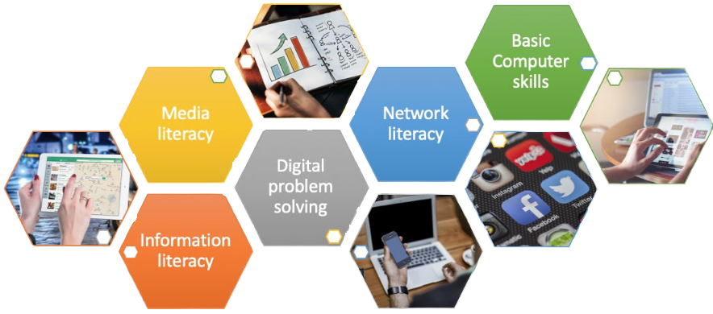

Digital Literacy Overview
What is Digital Literacy?
Digital literacy is the ability to navigate our digital world using reading, writing, technical skills, and critical thinking. It’s using technology—like a smartphone, PC, e-reader, and more—to find, evaluate, and communicate information. By developing Digital Literacy skills, you can effectively use technology to explore the Internet. - Microsoft
What Are Best Practices in Digital Literacy?
- Begin with direct instruction for computer skills development but quickly move beyond it and require relevant use of instructed skills in support of other learning. Traditional explanation, modeling, and controlled activities can help students understand and develop basic skills. If they do not have a chance to use the skills, they will likely not be able to transfer the skills to relevant contexts outside of the classroom.
- Ensure that students know relevant vocabulary to support their computer use. If students are to understand instructions, ask questions, and follow directions when using computers and other technologies, they need to know the vocabulary associated with computer components and software, their functions, and the tasks accomplished by their use.
- Allow ample opportunity for self-directed work that enables students to make choices when applying their computer skills and dealing with challenges that arise. Although direct instruction on discrete skills can be helpful, the teacher should quickly provide relevant application activities.
- Meet students where they are, offering opportunities to learn new computer skills or work toward higher-level digital literacy competencies as they become ready. Many adults do not access the internet in their daily lives due to perceived lack of relevance (Pew Center for Research Survey, 2013). Instruction in a group setting must be highly differentiated to overcome students’ feeling that computer skills are not for them. You can get a sense of a student’s skills by administering modules from the Northstar Digital Literacy Assessment (which are available at no cost) or another similar assessment or by using a checklist of essential classroom computer skills. This will allow you to focus your work with students on the particular skills they need, and you can update the checklist as students demonstrate the skills on the initial list.
- For more details, read the full PDF:
Modules
- The Keyboard and Typing
- Computer Basics
- The Internet
- Software for Business
- Working and Collaborating Online
- Staying Safe in a Digital World
- Troubleshooting Basics
Citations
- Teaching skills that matter (TSTM) toolkit: Digital Literacy - Ed. (n.d.). https://lincs.ed.gov/sites/default/files/2-Digital-Lit-Tab-2-508.pdf
- Three reasons you really should learn to type. LinkedIn. (n.d.). https://www.linkedin.com/business/learning/blog/productivity-tips/three-reasons-you-really-should-learn-to-type
- Digital Literacy courses, programs & resources | Microsoft Digital Literacy. (n.d.). Microsoft. https://www.microsoft.com/en-us/digital-literacy
- What is Digital Literacy? | adobe acrobat. (n.d.). https://www.adobe.com/acrobat/hub/what-is-digital-literacy.html
- Peterson, Sarah. “Trauma-Informed Care.” The National Child Traumatic Stress Network, 25 May 2018, www.nctsn.org/trauma-informed-care.
- Working with Computers and Devices Online Class | LinkedIn Learning, formerly Lynda.com. (n.d.). LinkedIn. Retrieved October 16, 2023, from https://www.linkedin.com/learning/working-with-computers-and-devices/
